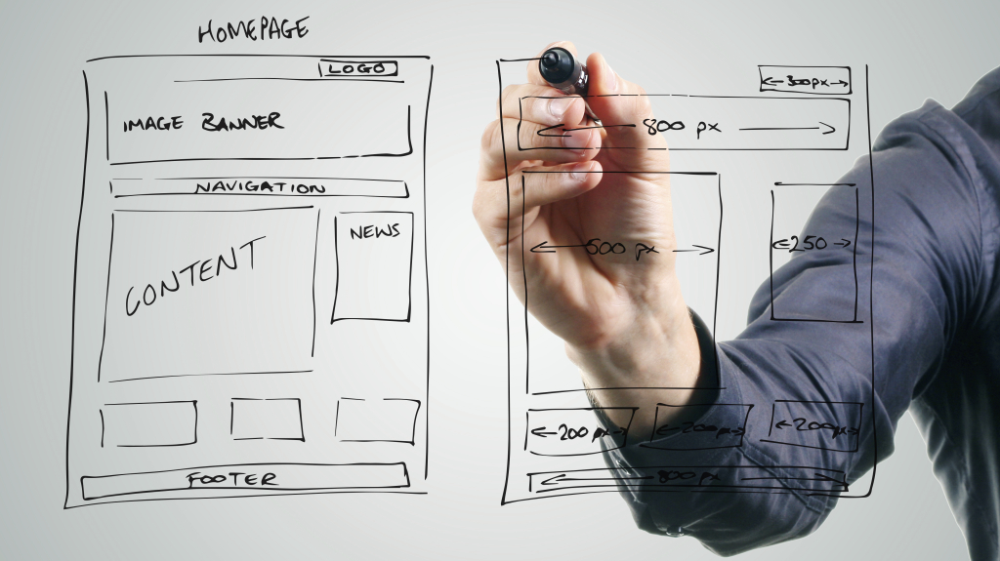

Planejamento para criação de sites

Guia de criação de sites
Você provavelmente está lendo aqui por que está pensando em fazer um novo site, se é a primeira vez muitas dúvidas podem surgir, e caso isso aconteça, pode entrar em contato com a gente. Mas antes pode avaliar cada etapa do nosso passo-a-passo:
Construir um site confiável e profissional exige uma série de conhecimentos em algumas áreas como design, comunicação, marketing, tecnologia, usabilidade e programação. Não precisa ser especialista em todas as áreas, mas é fundamental ter uma boa noção ou contar com alguem que possa ajudar no desenvolvimento.
Também não existe uma receita para o sucesso, mas um conjunto de boas práticas que quando bem executadas potencializam as chances de você construir um site poderoso. E no primeiro passo, neste post falaremos sobre as etapas básicas do planejamento.
Planejamento
Definição geral e protótipo do site.
É uma etapa bem abrangente pois é nela que deverão ser definidos todos os aspectos do projeto e é fundamental começar respondendo algumas perguntas como:
1. Quem vai acessar o site?
Qual seria o perfil do público que estaria interessado em acessar o seu site e obter informações ou mesmo comprar seus produtos? O principal nesta etapa é conhecer e tentar entender ao máximo os possíveis usuários do seu site, o que elas fazem, qual o tipo de linguagem seria mais apropriado para falar diretamente com elas? Essas pessoas visualizariam seu site mais no computador ou no smartphone? Busque informações precisas em fontes confiáveis, acesse sites concorrentes diretos e indiretos, avalie o design, interação, tempo de resposta, linguagem...
2. Qual o tipo de site mais apropriado?
Se será um site institucional, um blog, um portal, uma loja virtual, entre outros. Você precisa disponibilizar apenas suas informações básicas de contato? Precisa publicar conteúdo constantemente? Precisa vender pelo site? Precisa conectar pessoas? Disponibilizar algum serviço online?
3. Quais funcionalidades serão necessárias ?
Seu site precisa de quais recursos para ser relevante para seus usuários. Você precisará, por exemplo, de um mecanismo de busca interna, um formulário de contato, um mapa interativo, galeria de imagens? O ideal é levantar e classificar as referências.
4. Comece a produção!
Com as respostas das perguntas acima, certamente a ideia de onde se quer chegar estará mais clara. Então você consegue fazer um esboço do seu projeto?
Vamos começar:
- Desenhando a estrutura do seu site na mão ou em qualquer software de produção gráfica de sua preferência.
- Escrevendo os textos de todas as páginas e seções do site.
- Pesquisar ou produzir fotos ou videos para enriquecer o conteúdo do site.
Se quiser pode compartilhar seu resultado com a gente. No próximo post vamos continuar com o nosso guia de criação de sites, falando sobre os aspectos técnicos do desenvolvimento do seu site.